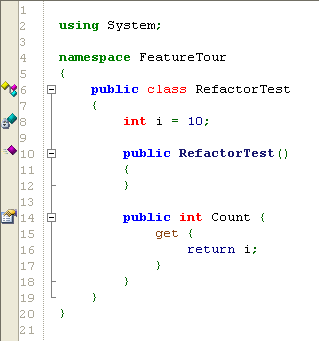
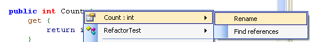
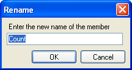

"Refactoring is the process of changing a software system in such a way that it does not alter the external behavior of the code yet improves its internal structure."
SharpDevelop supports the Rename refactoring where you can rename a variable, class, method, field or property and all references to it are updated.
Given the code:

You decide that the Count property is badly named and you want to change it, but it is used in several other classes. Right click the Count property and under its name in the menu select Rename.

This opens the Rename dialog box.

Type in a new name for the property and click the OK button. This renames the property and updates all the code that uses this property.